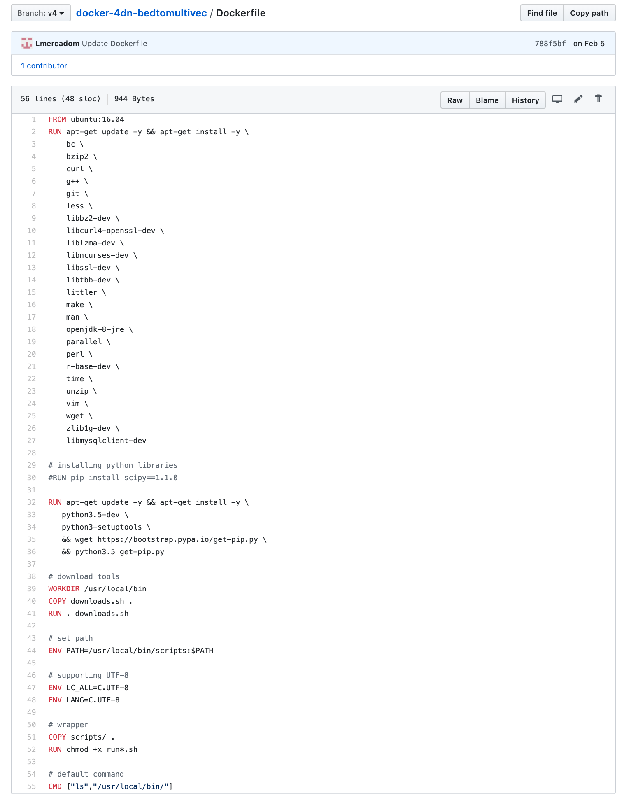
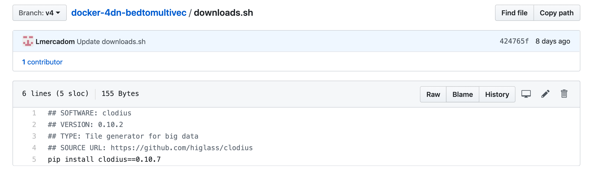

Docker Image Repo¶
Getting Started¶
The first thing to do is to create a Github repository for the pipeline. This repository should follow the 4DN-DCIC general conventions.
4DN-DCIC General Conventions¶
Naming:
The name of the repo should start by the prefix docker-4dn- followed by the name of the repo. The name should be informative about what the pipeline does.
Example: This pipeline converts a file from bed format to multivec format.

The Dockerfile:
This file contains the instructions to assemble the docker image.
Example:
You can find a template of the Dockerfile here
The scripts folder
This folder contains the scripts of your bioinformatics software. The run-<tool-name>.sh
contains the command-line instructions to run the scripts and tools inside the docker.
Example:

Note
Depending on the complexity of the pipeline, there can be one or several run-<tool-name>.sh files.
See the Hi-C pipeline for a more complex example of how multiple``run-<tool-name>.sh`` files are used.
https://github.com/4dn-dcic/docker-4dn-hic
The downloads.sh file:
This file contains all the major software components of the pipeline. It should contain comment lines that describe the name and version of individual software tools.
Example: the main software of the bedtomultivec pipeline is clodius. You can refer to the Hi-C pipeline again for a more complex example
The requirements.txt/environment.yml file:
This file contains the dependencies of the software components.
**The README file **
Make sure to write a README file at the end that explains the different components of the pipeline See here an example https://github.com/4dn-dcic/docker-4dn-hic
Note
Create a new branch from master and label it with a version such as v1, v2…
Testing the docker image locally¶
In order to test the docker image locally, you need to download and install docker.
Once docker is installed in your computer, clone the repo and go to the local folder. Run the following command to build the local image:
$ docker build -t <name-of-the-local-image>:version .
The name of the local image is the same and the name of the repo. Make sure to include the version that corresponds to the branch label.
Example:
$ docker build -t 4dn-bedtomultivec:v4 .
Once the docker image is built, you can test it by running the following command:
$ docker run -v <path-to-test-files>:/d1/:rw <the-docker-image> run-<repo-name>.sh [parameters]
Example:
$ docker run -v /users/luisa/test_files/:/d1:rw 4dn-bedtomultivec:v4 run-bedtomultivec.sh /d1/test_file.bed /d1/test.chrom.sizes 200 /d1/infos.txt 15 /d1/
Once your local image works properly and gives the correct output, you can push the docker image to DockerHub. Ask Soo to add your Github username to the 4DN-DCIC DockerHub repo.
First tag the image using the following command:
$ docker tag <your_image_name>:<version> 4dndcic/<your_image_name>:<version>
Example:
$ docker tag 4dn-bedtomultivec:v4 4dndcic/4dn-bedtomultivec:v4
Now you can push the image to the DockerHub repo:
$ docker push 4dndcic/4dn-bedtomultivec:v4
Note
You may need to login first to the DockerHub account using the command docker login and entering your username and password. You can now check the docker image in the DockerHub repo.